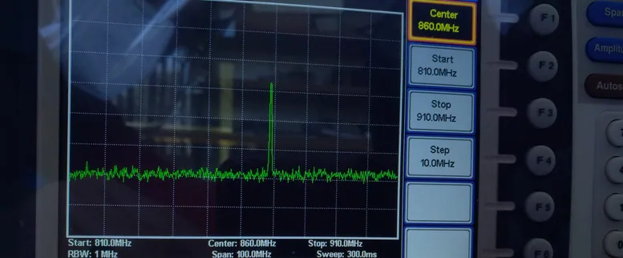
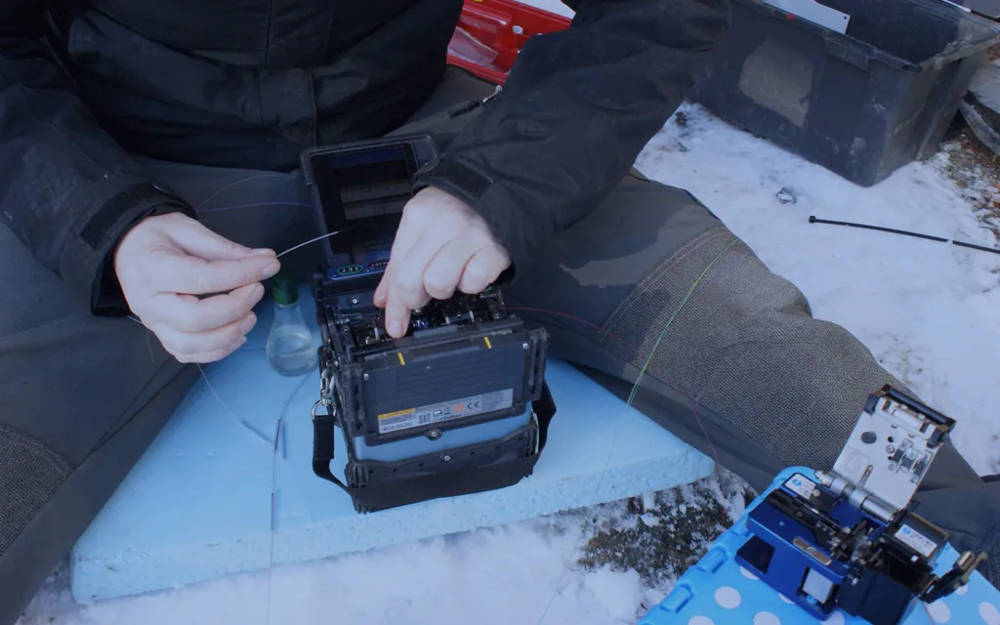

InputFacility + service need
Review the project context
Begin with the facility, service need, project stage, available information, known conditions, and the questions that still need review.
Discuss this stage →Hybridata uses a project-aware sequence that begins with the facility and approved requirements, then keeps scope, responsibilities, and project-defined records visible.



Licensed industry photography provides context only. Subjects and facilities shown are not represented as Hybridata employees, clients, projects, or completed work.
The rail keeps decisions, handoffs, and contextual next actions visible instead of flattening the process into interchangeable boxes.
Begin with the facility, service need, project stage, available information, known conditions, and the questions that still need review.
Discuss this stage →Organize the infrastructure requirement, responsible parties, open decisions, and project-defined activities before treating a possible outcome as a fact.
Discuss this stage →Keep available records, site context, dependencies, and the responsible decision owner visible in the project conversation.
Confirm access, timing, scope, records, and other conditions named in the approved project requirements before field work is scheduled.
Hybridata's field delivery follows the activities included in the approved scope. Unstated instruments, methods, results, and approvals are not assumed.
Testing methods, acceptance criteria, records, exceptions, and turnover items are identified by the project rather than presented as a universal deliverable.
The project record and handoff items follow the agreed scope and responsible-party review path.
Discuss this stage →Approved company facts are stated directly. Project terms and activities are defined for each engagement rather than generalized into a promise.
Share what is known about the facility and project. The next practical question can be identified without a promise about timing or outcome.
Commercial infrastructure planning